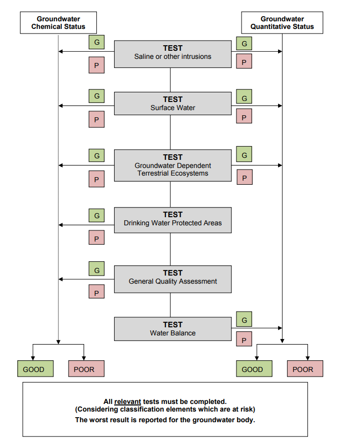
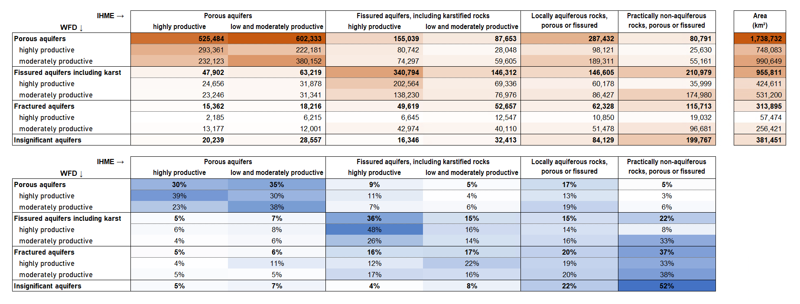
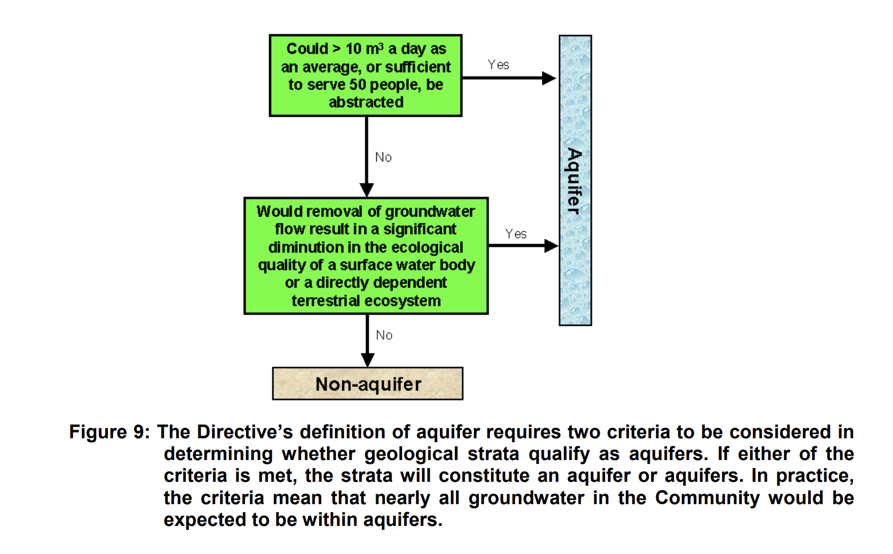

Groundwater bodies#
Warning
Updated: 2026-08-25
Added the GWChemicalExemption and GWQuantitativeExemption table to the descriptive dataset.
Corrected the dcMetadata table diagram and description.
Updated: 2026-07-27
Renamed the GWCharacterisation table to avoid collisions.
Added the overview diagram
Corrected the NBL query.
Updated: 2026-07-23
Included the Spatial dataset.
Updated: 2026-07-06
Changes based on feedback from WG DIS and WG Groundwater members.
The “lithology” placeholder attribute was removed was removed.
The GWStatus table attributes related to risk and failure were aligned with [1].
The gwPollutantCausingRisk and gwAtRiskQuantitative attributes were reintroduced.
Quality control is introduced in the reporting of natural background levels. Further information about the 3rd cycle reporting of natural background levels was included GroundWaterBody - 3rd cycle - Parameters with reported Natural Background Level.
Purpose and overview#
This section revises the reporting of information related to Groundwater Bodies in the 2nd and 3rd cycle of reporting of the Water Framework Directive River Basin Management Plans. It also presents a proposal for simplifying the electronic reporting in the 4th cycle.
Current structure - 3rd cycle#
In the 3rd cycle, the information about Groundwater bodies was reported in 4 separate schemas:
the GWB_2022 schema, containing information about each groundwater body (Figure 36)
the GWMET_2022 schema, containing information about the methodologies (see Groundwater methodologies)
the GML_GroundWaterBody_2022 schema, containing the GroundWaterBody spatial dataset.
the GML_GroundWaterBodyHorizon_2022 schema, containing the ancillary GroundWaterBodyHorizon spatial dataset.
GWB_2022 schema - 3rd cycle#
The GWB_2022 schema was already partially revised with regard to the reporting of exemptions. See:
Other simplifications already discussed also apply to the GWB schema:
removal of the textual reporting of “other” pollutants
removal of the textual reporting of “other” pressures
removal of the textual reporting of “other” impacts
The Commission has revised the GroundWaterBody class, and removed the following elements:
GWB/GroundWaterBody/gwEORiskQuantitative
GWB/GroundWaterBody/gwEORiskChemical
The Commission has revised the GWPollutant class, and removed the following elements:
GWB/GroundWaterBody/GWPollutant/gwPollutantExceedancesNotCounted
---
config:
class:
hideEmptyMembersBox: true
layout: dagre
theme: default
---
classDiagram
class GWChemicalExemptionType ["«XSDcomplexType»
GWChemicalExemptionType"] {
«XSDelement»
+ gwChemicalExemptionType: GWChemicalExemptionType_Union_Enum
+ gwChemicalExemptionPressure: SignificantPressureType_Enum
}
class GWPollutant ["«XSDcomplexType»
GWPollutant"]{
«XSDelement»
+ gwPollutantCode: ChemicalSubstances_Enum
+ gwPollutantOther: OtherType [0..1]
+ gwPollutantCausingRisk: YesNoUnknown_Linear_Union_Enum
+ gwPollutantCausingFailure: YesNoCode_Enum
+ gwPollutantUpwardTrend: YesNoUnknownUnknown_Linear_Union_Enum
+ gwPollutantTrendReversal: YesNoUnknownNotApplicable_Code_Enum
+ gwPollutantExceedancesNotCounted: YesNoUnknownCode_Enum
+ gwPollutantBackgroundLevelSet: YesNoCode_Enum
+ gwPollutantBackgroundLevelValue: ThresholdType [0..1]
+ gwPollutantBackgroundLevelUnit: UnitOfMeasure_Enum [0..1]
+ gwPollutantTrendReversalProcess: YesNoUnknownNotApplicableCode_Enum
}
class GWAssociatedProtectedArea ["«XSDcomplexType»
GWAssociatedProtectedArea"]{
«XSDelement»
+ euProtectedAreaCode: FeatureUniqueEUCodeType
+ protectedAreaType: ProtectedGWAreaType_Enum
+ protectedAreaObjectivesSet: ProtectedAreaObjectivesEnum [0..1]
+ protectedAreaObjectivesMet: YesNoInformation_Union_Enum [0..1]
+ protectedAreaComment: String1000Type [0..1]
+ protectedAreaExemption: ExemptionType_Enum [1..*]
}
class GroundWaterBody ["«XSDcomplexType»
GroundWaterBody"] {
«XSDelement»
+ euGroundWaterBodyCode: FeatureUniqueEUCodeType
+ linkSurfaceWaterBody: YesNoCode_Enum
+ linkSurfaceWaterBodyCode: FeatureUniqueEUCodeType [0..*]
+ linkTerrestrialEcosystem: YesNoUnknownCode_Enum
+ geologicalFormation: GeologicalFormation_Enum
+ groundwaterBodyTransboundary: YesNoCode_Enum
+ gwSignificantPressureType: SignificantPressureType_Enum [1..*]
+ gwSignificantPressureOther: String100Type [0..1]
+ gwSignificantImpactType: SignificantImpactType_Enum [1..*]
+ gwSignificantImpactOther: String1000Type [0..1]
+ gwAtRiskQuantitative: YesNoCode_Enum
+ gwReasonsForRiskQuantitative: QuantitativeFailure_Enum [0..*]
+ gwEoRiskQuantitative: GWERiskQuantitative_Enum [0..1]
+ gwQuantitativeStatusValue: StatusCode_Enum
+ gwQuantitativeReasonsForFailure: QuantitativeFailure_Enum [0..*]
+ gwQuantitativeAssessmentYear: YearRangeType
+ gwQuantitativeAssessmentConfidence: Confidence_Enum
+ gwQuantitativeStatusExpectedAchievementDate: GoodStatus_Enum
+ gwQuantitativeExemptionType: ExemptionType_Enum [1..*]
+ gwQuantitativeExemptionPressure: SignificantPressureType_Enum [0..*]
+ gwAtRiskChemical: YesNoCode_Enum
+ gwEoRiskChemical: EORiskChemical_Enum [0..1]
+ gwChemicalStatusValue: StatusCode_Enum
+ gwChemicalReasonsForFailure: ReasonsForFailure_Enum [0..*]
+ gwChemicalAssessmentYear: YearRangeType
+ gwChemicalAssessmentConfidence: Confidence_Enum
+ gwChemicalStatusExpectedAchievementDate: GoodStatus_Enum
}
class GWB ["«XSDcomplexType»
GWB"]{
«XSDelement»
+ countryCode: CountryCode_Enum
+ euRBDCode: FeatureUniqueEUCodeType
}
GWAssociatedProtectedArea --> GroundWaterBody: GWAssociatedProtectedArea
GWPollutant --> GroundWaterBody: GWPollutant
GWChemicalExemptionType --> GWPollutant: GWChemicalExemptionType
GroundWaterBody --> GWB: GroundWaterBody
Figure 36 Class diagram for the GWB_2022 schema in the 3rd cycle.#
In the 4th cycle of reporting, the data will be delivered in the Reportnet3 platform:
the remaining GWMET_2022 classes and elements were reorganised into a relational model, as required by the migration to Reportnet3
selective denormalisation was used to keep a low number of tables and facilitate the quality control
the requirements of Directive 2006/118/EC also need to be taken into account
(36) In order to ensure a level playing field in the Union and allow comparability of water body status between Member States, there is a need to harmonise national threshold values for some man-made synthetic groundwater pollutants. Threshold values should be established as necessary at Union level for pollutants which have an anthropogenic origin or for the products of their degradation or decomposition, provided that those pollutants and degradation products either do not occur naturally in groundwater, or, if identical natural counterparts exist, provided that their natural background levels are, at most, low. Those threshold values should be included in the repository of harmonised threshold values for man-made synthetic substances in groundwater of national, regional or local concern in a new Part D of Annex II to Directive 2006/118/EC. A harmonised threshold value for individual pharmaceuticals should be included for application by Member States to any pharmaceutical active substance identified as posing a risk at national level unless a stricter standard or threshold value has been set specifically for that substance at Union or national level.
(37) All provisions of Directive 2006/118/EC relating to the assessment of groundwater chemical status should be adapted to the introduction of the third category of harmonised threshold values in a new Part D of Annex II to that Directive, in addition to the quality standards set out in Annex I to that Directive and the national threshold values set out in accordance with the methodology set out in Part A of Annex II to that Directive.
Proposed structure - 4th cycle#
For the 4th cycle of reporting, the proposed structure combines into a single dataflow (see Figure 37) the information related to groundwater:
Note that, if there are changes since the 3rd cycle, the national spatial data related to river basin districts and surface water bodies must be reported before it can be referenced to in the groundwater dataflow tables.
---
config:
class:
hideEmptyMembersBox: true
layout: dagre
theme: neutral
themeVariables:
noteBkgColor: LightYellow
noteTextColor: black
---
classDiagram
direction TB
namespace DescriptiveDataset {
class GWNaturalBackgroundLevel{}
class GWLinkSurfaceWaterBody{}
class GWCharacterisation{}
class GWQuantitativeStatus{}
class GWPressureImpact{}
class GWStatus{}
class GWPollutant{}
class GWGrouping{}
class GWChemicalExemption{}
class GWQuantitativeExemption{}
}
namespace SpatialDataset {
class GroundWaterBodyHorizon{}
class GroundWaterBody{}
}
namespace MethodologiesDataset {
class GWThresholdValue{}
class GWPressureAssessment{}
class GWMethodologies{}
}
namespace DocumentsData {
class dcMetadata{}
class Reference{}
class Document{}
}
namespace ReferenceDataset {
class RiverBasinDistrict_4thCycle:::otherDataset{
}
class SurfaceWaterBody_4thCycle:::otherDataset{
}
class GroundWaterBody_3rdCycle:::otherDataset{
}
}
GWCharacterisation "1" -- "1" GWStatus
GWStatus "1" -- "0..1" GWQuantitativeStatus
GWStatus "1" -- "0..n" GWPollutant
GWStatus "1" -- "0..n" GWPressureImpact
GWQuantitativeStatus ..> GWGrouping
GWPollutant ..> GWGrouping
GWQuantitativeStatus "1" -- "0..n" GWQuantitativeExemption
GWPollutant "1" -- "0..n" GWChemicalExemption
GWNaturalBackgroundLevel "0..n" -- GWCharacterisation
GWLinkSurfaceWaterBody "0..n" -- GWCharacterisation
GWLinkSurfaceWaterBody "0..n" ..> SurfaceWaterBody_4thCycle
GroundWaterBody "1" -- "0..n" GroundWaterBodyHorizon
GroundWaterBody ..> GroundWaterBody_3rdCycle
GroundWaterBody ..> RiverBasinDistrict_4thCycle
GWCharacterisation ..> GroundWaterBody
GWPollutant ..> GWThresholdValue
GWPressureImpact ..> GWPressureAssessment
GWThresholdValue ..> Reference
GWPressureAssessment ..> Reference
GWMethodologies ..> Reference
Reference ..> Document
dcMetadata ..> RiverBasinDistrict_4thCycle
dcMetadata ..> Document
classDef default fill:white,stroke:#000;
classDef forFixing fill:white,stroke:#f00;
classDef otherDataset fill:lavender,stroke:#000;
Figure 37 Groundwater - overview - 4th cycle#
Descriptive dataset - 4th cycle#
The proposed structure for the 4th cycle electronic reporting is presented in the class diagram in Figure 38 and a brief description of each table is included in Table 34.
The core data about each groundwater body is reported in 3 tables:
GWCharacterisation,LinkSurfaceWaterBodyandGWNaturalBackgroundLevel.The content of this set of tables does not depend of the status assessment, and can be prepared in advance.
A second set of tables contains information about the chemical and quantitative status assessment and about pressures and impacts:
GWStatus,GWQuantitativeStatus,GWPollutantandGWPressureImpact.The ancillary table
GWGroupingsupports the reporting of grouping (if used the assessment).A link to the
GWMethodologies::ThresholdValuetable clarifies which threshold value is applied to each pollutant.
(A list of the default EU threshold values will be provided where defined by the EU legislation.)
---
config:
class:
hideEmptyMembersBox: true
layout: dagre
theme: neutral
themeVariables:
noteBkgColor: LightYellow
noteTextColor: black
---
classDiagram
direction TB
class GWLinkSurfaceWaterBody{
+ euGroundWaterBodyCode: wiseIdentifier
+ euSurfaceWaterBodyCode: wiseIdentifier
+ linkType: GroundwaterSurfaceWaterLink
}
class GWNaturalBackgroundLevel{
+ euGroundWaterBodyCode: wiseIdentifier
+ parameterCode: Parameter
+ parameterValue: range [0..1]
+ parameterUnit: UnitOfMeasure [0..1]
}
class GWCharacterisation{
+ euGroundWaterBodyCode: wiseIdentifier
+ aquiferType: AquiferMediaTypeValue
+ aquiferProductivity: AquiferProductivity
+ groundWaterBodyTransboundary: YesNo
+ linkSurfaceWaterBody: YesNo
+ linkTerrestrialEcosystem: YesNoUnknown
}
class GWQuantitativeStatus{
+ euGroundWaterBodyCode: wiseIdentifier
+ gwAtRiskQuantitative: YesNoUnknown
+ gwQuantitativeStatusValue: QuantitativeStatus
+ gwQuantitativeAssessmentPeriod: range
+ gwQuantitativeAssessmentConfidence: AssessmentConfidence
+ gwQuantitativeAssessmentMethod: AssessmentMethod [1..n]
+ gwGroupingIdentifier: wiseIdentifier [0..n]
}
class GWPressureImpact{
+ euGroundWaterBodyCode: wiseIdentifier
+ gwPressureType: PressureType [0..1]
+ gwImpactType: ImpactType [0..1]
}
class GWStatus{
+ euGroundWaterBodyCode: wiseIdentifier
+ gwQuantitativeStatusValue: QuantitativeStatus
+ gwChemicalStatusValue: ChemicalStatus
+ gwQuantitativeStatusReasonsForRisk: ReasonForRiskOrFailure [1..n]
+ gwQuantitativeStatusReasonsForFailure: ReasonForRiskOrFailure [1..n]
+ gwChemicalStatusReasonsForFailure: ReasonForRiskOrFailure [1..n]
}
class GWPollutant{
+ euGroundWaterBodyCode: wiseIdentifier
+ gwPollutantCode: Parameter
+ gwPollutantCausingRisk: YesNoUnknown
+ gwThresholdIdentifier: wiseIdentifier
+ gwPollutantCausingFailure: YesNoUnknown
+ gwPollutantAssessmentPeriod: range
+ gwPollutantAssessmentConfidence: AssessmentConfidence
+ gwPollutantAssessmentMethod: AssessmentMethod [1..n]
+ gwGroupingIdentifier: wiseIdentifier [0..n]
+ naturalBackgroundLevelSet: YesNoNotApplicable
+ gwPollutantUpwardTrend: YesNoUnknownNotAssessed
+ gwPollutantTrendReversal: YesNoUnknownNotApplicableNotAssessed
+ gwPollutantTrendReversalProcess: YesNoUnknownNotApplicableNotAssessed
}
class GWGrouping{
+ gwGroupingIdentifier: wiseIdentifier
+ euGroundWaterBodyCode: wiseIdentifier
}
GWCharacterisation "1" -- "1" GWStatus
GWStatus "1" -- "0..1" GWQuantitativeStatus
GWStatus "1" -- "0..n" GWPollutant
GWStatus "1" -- "0..n" GWPressureImpact
GWQuantitativeStatus ..> GWGrouping: gwGroupingIdentifier
GWPollutant ..> GWGrouping: gwGroupingIdentifier
GWLinkSurfaceWaterBody "0..n" -- GWCharacterisation: {linkSurfaceWaterBody = 'Yes'}
GWNaturalBackgroundLevel "0..n" -- GWCharacterisation
GWNaturalBackgroundLevel .. GWPollutant: {quality control}
%% note for GWPollutant "GroundwaterMethodologies::ThresholdValue.gwThresholdIdentifier"
classDef default fill:white,stroke:#000;
classDef forFixing fill:white,stroke:#f00;
Figure 38 Groundwater - descriptive data - 4th cycle#
Table |
Description |
|---|---|
GWCharacterisation |
modified The In the 3rd cycle, the reporting guidance requested description of
“the main geological formation of the aquifer type”.
The usability of the reported data was limited,
beyond visualisation purposes. |
GWLinkSurfaceWaterBody |
modified. |
GWNaturalBackgroundLevel |
modified The data related to the natural background level (NBL) of substances in groundwater is moved from the GWPollutant class into a separate GWNaturalBackgroundLevel table. Quality control procedures will be introduced to avoid mistakes in the reporting (see Natural background levels). |
GWStatus |
new In accordance to the overall procedure of classification tests for assessing groundwater status
[1]
(see Figure 39)
the different elements causing risk must be reported.
The option If, and only if, If, and only if, |
GWPollutant |
modified |
GWQuantitativeStatus |
new |
GWGrouping |
new The |
GWPressureImpact |
modified. For water bodies that do not achieve good chemical status in 2027,
the significant pressures are reported in the For cases where a pressure is not causing failure,
but still causes an impact that needs to be managed,
the Note that the reporting of pressures and impacts
is combined into a single |
{kind=link}

Figure 39 Overall procedure of classification tests for assessing groundwater status [1].#
Exemptions#
Refer to the documentation about exemptions, specifically:
Methodologies dataset - 4th cycle#
Refer to the Groundwater methodologiessection.
Spatial dataset - 4th cycle#
The Spatial dataset contains the GroundWaterBody spatial data and, optionally, the GroundWaterBodyHorizon spatial data (Figure 40).
---
config:
class:
hideEmptyMembersBox: true
layout: dagre
theme: neutral
---
classDiagram
direction LR
class GroundWaterBody {
+ geometry_polygon: MultiPolygon [0..1]
+ inspireIdLocalId: string254
+ inspireIdNamespace: string254
+ inspireIdVersionId: string25 [0..1]
+ thematicIdIdentifier: wiseIdentifier
+ thematicIdIdentifierScheme: IdentifierScheme
+ beginLifespanVersion: date [0..1]
+ endLifespanVersion: date [0..1]
+ predecessorsIdentifier: wiseIdentifier [0..n]
+ predecessorsIdentifierScheme: IdentifierScheme [0..1]
+ successorsIdentifier: wiseIdentifier [0..n]
+ successorsIdentifierScheme: IdentifierScheme [0..1]
+ wiseEvolutionType: WiseEvolutionType
+ nameTextInternational: string254
+ nameText: string254
+ nameLanguage: Language
+ designationPeriodBegin: date
+ designationPeriodEnd: date [0..1]
+ zoneType: ZoneType
+ specialisedZoneType: SpecialisedZoneType
+ legalBasisName: string254 [0..1]
+ legalBasisLink: URL [0..1]
+ legalBasisLevel: LegislationLevelValue [0..1]
+ relatedZoneIdentifier: wiseIdentifier
+ relatedZoneIdentifierScheme: IdentifierScheme
+ link: URL [0..1]
+ horizons: int [1..n]
}
class GroundWaterBodyHorizon {
+ geometry_polygon: MultiPolygon [0..1]
+ thematicIdIdentifier: wiseIdentifier
+ thematicIdIdentifierScheme: IdentifierScheme
+ horizon: int
}
Figure 40 Spatial dataset - GroundWaterBody and GroundWaterBodyHorizon - 4th cycle#
The following changes have been made to the GroundWaterBody spatial table
(in comparison to the 3rd cycle of reporting):
The attributes
sizeValueandsizeUomwere removed, because they can be derived from the reported geometry.Two attributes
relatedTransboundaryIdentifierandrelatedTransboundaryIdentifierSchemewere removed, because they are not required at EU level.All the date values are requested as YYYY-MM-DD, because that was the format used by all the data providers in the previous cycles (and therefore it is not necessary to maintain more variants). This applies to
beginLifespanVersion,endLifespanVersion,designationPeriodBegin,designationPeriodEnd.The attributes
successorsIdentifierandsuccessorsIdentifierSchemehave been kept for clarity’s sake. In the reported datasets, the value of these attributes will always be NULL. The appropriate value will be derived and included in the published WISE datasets for the 1st, 2nd and 3rd cycle GroundWaterBody datasets.The quality control tests enforced in the 3rd cycle of reporting will continue to be applied in the 4th cycle.
Additionally:
The geometry is reported in the
GroundWaterBodytable, if none of the national groundwater bodies has multiple horizons. In this case, theGroundWaterBodyHorizonis not reported.The geometry is reported in the
GroundWaterBodyHorizontable, if at least one of the national groundwater bodies has multiple horizons. In this case, geometry is not reported in theGroundWaterBodytable.
The structure of the GroundWaterBodyHorizon spatial table was not modified.
Documents dataset - 4th cycle#
The Documents dataset follows the standard structure used in various WISE dataflows (Figure 41):
The
dcMetadatatable provides the basic Dublin Core metadata elements about the delivery.If required by the data providers, and especially if spatial data is being reported, the
licenseDocumentand themetadataDocumentattributes allow the provision of additional information about the dataset.The
dcMetadatatable also functions as a “manifest file” explaining if the delivery contains data for a given river basin district or not.
The
Documenttable allows the upload of documents (for example, PDFs) or the provision of ahyperlinkto a document stored in a publicly accessible national web site.The
Referencetable is also standard in the WISE dataflows: thebookmarkit allows the identification of the chapter(s), sections(s) or page range(s) where the relevant information about asubjectcan be found within a document.
---
config:
class:
hideEmptyMembersBox: true
layout: dagre
theme: neutral
---
classDiagram
direction LR
class dcMetadata {
«metadata»
+ title: string
+ creatorOrganisationName: string
+ creatorElectronicMailAddress: Email
+ description: string [0..1]
+ created: date [0..1]
+ language: Language [1..n]
+ license: Licence
+ rights: string [0..1]
+ rightsHolder: string [0..1]
+ licenseDocument: documentCode [0..n]
+ metadataDocument: documentCode [0..n]
«manifest»
+ euRBDCode: wiseIdentifier
+ includesSpatialData: YesNo
+ includesGroundWaterBodyHorizons: YesNo
+ includesDescritiveData: YesNo
}
class Reference {
+ referenceCode: wiseIdentifier
+ documentCode: documentCode
+ bookmark: string250
+ subject: string250
}
class Document {
+ documentCode: wiseIdentifier
+ documentName: string250
+ hyperlink: URL [0..1]
+ documentFile: Attachment [0..1]
}
class Licence{
<<enumeration>>
CC0
CC_BY_4_0
exactMatch_CC_BY_4_0
narrowMatch_CC_BY_4_0
}
Reference ..> Document: documentCode
dcMetadata ..> Document: licenseDocument
dcMetadata ..> Document: metadataDocument
dcMetadata ..> Licence: license
classDef default fill:white,stroke:#000;
classDef forFixing fill:white,stroke:#f00;
Figure 41 Groundwater - 4th cycle - Documents#
The following criteria apply:
The
dcMetadatatable must contain one and only one record for each of the country’s river basin districts, identified by theeuRBDCodevalue.The spatial dataset is national. The
includesSpatialDatavalue and theincludesGroundWaterBodyHorizonsvalue must be the same for all river basin districts.If
includesSpatialData = 'no'then no spatial data is expected, and the quality control of the descriptive dataset will run against the last technically accepted delivery of groundwater bodies spatial data.For countries reporting under the WFD, the last technically accepted delivery of groundwater bodies spatial data is always the data reported in the 3rd cycle.
If
includesSpatialData = 'yes' AND includesGroundWaterBodyHorizons = 'no', the geometry is reported ONLY in the GroundWaterBody spatial dataset.If
includesSpatialData = 'yes' AND includesGroundWaterBodyHorizons = 'yes', the geometry is reported ONLY in the GroundWaterBodyHorizons spatial dataset.The descriptive dataset is also national, but the quality control will allow deliveries where some, or all, the river basin districts have
includesDescriptiveData = 'no'.For countries reporting under the WFD, the quality control will raise an ERROR, if some, or all, the river basin districts have
includesDescriptiveData = 'no'.Note that the Methodologies dataset tables must always be reported for the river basin districts where
includesDescriptiveData = 'yes'
Codelists - 4th cycle#
For the
AquiferMediaTypeValuecodelist, see Figure 42.
The codelist was realigned with the INSPIRE codelist to allow more flexibility.See the definitions in Table 35.
For the
AquiferProductivitycodelist, see Figure 42.
The codelist allows the reporting of aquifer productivity independently of the aquifer media values.
Further technical guidance on concepts, classification schemes and class boundaries is needed.[2]See the definitions in Table 36.
For the
AssessmentMethodcodelist, see Figure 43.
The codelist is used to report the assessment method for the chemical status and for the quantitative status.
The same codelist is used for surface water bodies, for the assessment method of ecological status or potential, and for the assessment method of chemical status.See the definitions in Table 37.
For the
AssessmentConfidencecodelist, see also Figure 43.
The codelist allow the reporting of the level of confidence in the results of the status assessment.
The same codelist is used for surface water bodies. See also [3] [4] [5].See the definitions in Table 38.
For the
GroundwaterSurfaceWaterLinkcodelist, see Figure 44.
The codelist is used to report the type of link between a given groundwater body and a given surface water body.See the definitions in Table 39.
For the
ReasonForRiskOrFailurecodelist, see Figure 45.See the definitions in Table 40.
For groundwater bodies in poor quantitative status, the codelist values are used in the
gwQuantitativeReasonsForFailureattribute to provide further information about one or more causes of failure (the most frequent cause will be likely be'waterBalance').
For groundwater bodies in good or unknown quantitative status, the optionnotApplicablemust be used.For groundwater bodies failing to achieve good chemical status, the codelist values are used in the
gwChemicalReasonsForFailureattribute to provide further information about one or more causes of failure (the most frequent cause will be likely be'generalQualityAssessment').
For groundwater bodies in good or unknown quantitative status, the optionnotApplicablemust be used. For groundwater bodies in good or unknown chemical status, the optionnotApplicablemust be used.For groundwater bodies where good quantitative status is at risk, the codelist values are used in the
gwQuantitativeReasonsForRiskattribute to provide further information about one or more causes of risk. For groundwater bodies wheregwAtRiskQuantitative = 'no'the optionnotApplicablemust be used.
For the
PressureTypecodelist, see Figure 111 in the section PressureType codelist - 4th cycle
---
config:
class:
hideEmptyMembersBox: true
layout: dagre
theme: neutral
---
classDiagram
direction TB
class AquiferMediaTypeValue{
<<enumeration>>
compound
fractured
karstic
karsticAndFractured
porous
porousAndFractured
other
unknown
}
class AquiferProductivity{
<<enumeration>>
high
moderate
low
insignificant
unknown
}
classDef default fill:white,stroke:#000;
classDef forFixing fill:white,stroke:#f00;
Figure 42 AquiferMediaTypeValue codelist and AquiferProductivity codelist - 4th cycle#
Notation |
Label |
Definition |
URI |
|---|---|---|---|
compound |
Compound |
A combination of a porous, karstic and/or fractured aquifer. |
https://inspire.ec.europa.eu/codelist/AquiferMediaTypeValue/compound |
fractured |
Fractured |
Fractured aquifers are rocks in which the primary porosity is negligible and the water circulation is through the secondary porosity (fractures, faults, joints, bedding planes). |
https://inspire.ec.europa.eu/codelist/AquiferMediaTypeValue/fractured |
karstic |
Karstic |
Karstic aquifers are fractured aquifers where the cracks and fractures have been enlarged by solution, forming large channels or even caverns. |
https://inspire.ec.europa.eu/codelist/AquiferMediaTypeValue/karstic |
karsticAndFractured |
Karstic and fractured |
A combination of karstic and fractured aquifer. |
https://inspire.ec.europa.eu/codelist/AquiferMediaTypeValue/karsticAndFractured |
porous |
Porous |
Porous aquifers are unconsolidated or consolidated deposits where water circulates through pores between the grains. |
https://inspire.ec.europa.eu/codelist/AquiferMediaTypeValue/porous |
porousAndFractured |
Porous and fractured |
A combination of porous and fractured aquifer. |
https://inspire.ec.europa.eu/codelist/AquiferMediaTypeValue/porousAndFractured |
other |
Other |
Other aquifer media types not covered by the other values. |
https://inspire.ec.europa.eu/codelist/AquiferMediaTypeValue/other |
Notation |
Label |
Definition |
|---|---|---|
high |
High productivity |
«to-be-provided» |
moderate |
Moderate productivity |
«to-be-provided» |
low |
Low productivity |
«to-be-provided» |
insignificant |
Insignificant productivity |
«to-be-provided» |
unknown |
Unknown |
No information is available about the aquifer’s productivity |
---
config:
class:
hideEmptyMembersBox: true
layout: dagre
theme: neutral
---
classDiagram
direction TB
class AssessmentMethod{
<<enumeration>>
monitoring
grouping
remoteSensing
modelling
expertJudgement
notApplicable
}
class AssessmentConfidence{
<<enumeration>>
high
medium
low
unknown
notApplicable
}
classDef default fill:white,stroke:#000;
classDef forFixing fill:white,stroke:#f00;
Figure 43 AssessmentMethod codelist and AssessmentConfidence codelist - 4th cycle#
Notation |
Label |
Definition |
Notes |
|---|---|---|---|
monitoring |
Monitoring |
The status assessment used monitoring data collected at the water body being assessed. |
This includes monitoring through conventional in situ sampling (including grab sampling, continuous sampling, passive sampling, eDNA sampling, etc.). |
grouping |
Grouping |
The status assessment used monitoring data from other similar water body(ies). |
Choose only ‘grouping’ if no monitoring data for the water body
was used in the assessment,
and only monitoring data from other similar water bodies was used. |
remoteSensing |
Remote sensing |
The status assessment was supported by Earth observation/remote sensing monitoring techniques. |
This option can be combined with any of the following options: ‘monitoring’, ‘grouping’,’modelling’. |
modelling |
Modelling |
The status assessment was based on modelling and/or statistical analysis. |
This option can be combined with any of the following options: ‘monitoring’, ‘grouping’,’remoteSensing’. |
expertJudgement |
Expert judgement |
The status assessment was based on expert judgement. |
Select this option if there is no monitoring data available in this water body,
and if monitoring data from other water were also not used,
and if monitoring using remote sensing techniques was also not used. |
notApplicable |
Not applicable |
This option is only valid if there was no assessment of the status (i.e. if the status is ‘unknown’). |
This option can NOT be combined with any other option. |
Notation |
Label |
Definition |
Notes |
|---|---|---|---|
high |
High confidence |
«to-be-provided» |
E.g. good monitoring data and a good conceptual model or understanding of the system based on information on its natural characteristics and its pressures |
medium |
Medium confidence |
«to-be-provided» |
E.g. limited or insufficiently robust monitoring data and expert judgement plays a significant role in assessment of status. |
low |
Low confidence |
«to-be-provided» |
E.g. no monitoring data, or no conceptual model or understanding of the system. |
unknown |
Unknown |
No information about the confidence level of the status assessment. |
|
notApplicable |
Not applicable |
Select this option if the status was not assessed. |
This option is only valid if the status is ‘unknown’. |
---
config:
class:
hideEmptyMembersBox: true
layout: dagre
theme: neutral
---
classDiagram
direction LR
class GroundwaterSurfacewaterLink{
<<enumeration>>
groundwaterDischargesToSurfaceWater
surfaceWaterRechargesGroundwater
bidirectionalWaterExchange
unknown
}
classDef default fill:white,stroke:#000;
classDef forFixing fill:white,stroke:#f00;
Figure 44 GroundwaterSurfaceWaterLink codelist - 4th cycle#
Notation |
Label |
Definition |
|---|---|---|
groundwaterToSurfaceWater |
Groundwater discharges to surface water |
«to-be-provided» |
surfaceWaterToGroundwater |
Surface water recharge groundwater |
«to-be-provided» |
bidirectionalWaterExchange |
Bidirectional water exchange |
«to-be-provided» |
unknown |
Unknown |
Use this option in the information requested is not known. |
---
config:
class:
hideEmptyMembersBox: true
layout: dagre
theme: neutral
---
classDiagram
direction LR
class ReasonForRiskOrFailure{
<<enumeration>>
salineOrOtherIntrusion
surfaceWater
groundWaterDependentTerrestrialEcosystem
drinkingWaterProtectionArea
generalWaterQualityAssessment
waterBalance
none
unknown
}
classDef default fill:white,stroke:#000;
classDef forFixing fill:white,stroke:#f00;
Figure 45 ReasonForFailure codelist - 4th cycle#
Notation |
Label |
Notes |
|
|---|---|---|---|
surfaceWater |
Surface water |
Failure to achieve Environmental Objectives (Article 4 WFD) for associated surface water bodies, resulting from anthropogenic water level alteration or change in flow conditions; significant diminution of the status of surface waters resulting from anthropogenic water level alteration or change in flow conditions. |
This option is only valid if |
groundWaterDependentTerrestrialEcosystem |
Groundwater-dependent terrestrial ecosystems |
Significant damage to groundwater-dependent terrestrial ecosystems resulting from an anthropogenic water level alteration. |
This option is only valid if |
salineOrOtherIntrusion |
Saline or other intrusion |
Regional saline or other intrusions resulting from anthropogenically induced sustained changes in flow direction. |
|
waterBalance |
Water balance |
Exceedance of available groundwater resource by long-term annual average rate of abstraction, which may result in a decrease of groundwater levels. |
This option is NOT a valid |
drinkingWaterProtectionArea |
Drinking water protected area |
Deterioration in quality of waters for human consumption. |
This option is only valid if there are Drinking Water Protection Areas
associated with the water body.
This option is NOT a valid |
generalWaterQualityAssessment |
General water quality assessment |
Significant impairment of human uses and/or significant environmental risk from pollutants across the groundwater body. |
This option is NOT a valid |
notApplicable |
Not applicable |
This option MUST be used if the status is ‘good’ or ‘unknown’. |
This option can NOT be combined with any other option. |
Todo
Groundwater - Topics that require discussion and clarification.
Revision of the ImpactType codelist.
Mapping tables to 3rd cycle codelists
Data analysis - 3rd cycle#
This section contains some of the exploratory data analysis that supported the revision of the data model.
It is not relevant for the understanding of the proposed model, but may be informative for data providers involved in the testing phase of the 4th cycle dataflows.
About the EEA discodata service
The example queries can be executed interactively in the EEA discodata service.
Note that some queries may timeout.
If you need to analyse the entire European dataset, download it in CSV format.
For example, the link https://discodata.eea.europa.eu/download/WISE_WFD/v2r1/GWB_GroundWaterBody
downloads the data of the [WISE_WFD].[v2r1].[GWB_GroundWaterBody] table.
Geological formation#
The WFD2016 and WFD2022 geologicalFormation attribute values are clearly similar to the Aquifer Type Code attribute (Table 41) in the International Hydrogeological Map of Europe 1:1,500,000 (IHME1500), although there is no reference to that source is made in the WFD Reporting Guidance documents.
A provisional spatial analysis of the two datasets
(using only the topmost horizons)
reveals limited agreement between the classifications.
In Figure 46,
the rows represent the reported WFD geological formation
and the columns represent the IHME aquifer type.
The values show the percentage of the area of each WFD geological formation
classified under each IHME aquifer type. For example:
48% of the area reported as ‘Fissured aquifers including karst - highly productive’ under WFD is similarly classified under IHME
33% of the area reported as ‘Fissured aquifers including karst - moderately productive’ under WFD is classified under IHME as ‘Practically non-aquiferous rocks, porous or fissured’.
In practice, this means that an existing pan-European hydrogeological map (IHME1500) can not be easily used to replace the information reported under WFD, but it also highlights the need for better clarification of the aquifer type and aquifer productivity values to be used in the 4th cycle.
{kind=link}

Figure 46 WFD geological formation and IHME1500 aquifer type.#
See detailed description
Column |
Description |
Example |
|---|---|---|
AQUIF_CODE |
Aquifer Type Code 1: Highly productive porous aquifers, Remark: Aquifer type 1 and 2 include less frequently fissured-porous aquifers and aquifer type 3 and 4 include less frequently porous-fissured aquifers. |
5 |
AQUIF_NAME |
Aquifer Type |
Highly productive porous aquifers |
SALTINTRUS |
Seawater Intrusion |
0 |
LEVEL1 |
Lithology Level 1 |
Quartzites, sandstones, shales, volcanic rocks |
LEVEL2 |
Lithology Level 2 |
Quartzites, sandstones |
LEVEL3 |
Lithology Level 3 |
Quartzites |
LEVEL4 |
Lithology Level 4 |
Metamorphic rocks |
LEVEL5 |
Lithology Level 5 |
Consolidated materials |
Copyright: IHME1500 v1.2 © BGR & UNESCO 2019
Citation: BGR & UNESCO (eds.) (2019): International Hydrogeological Map of Europe 1:1,500,000 (IHME1500). Digital map data v1.2. Hannover/Paris
Source: Documentation of the digital vector dataset. Description of the attribute tables. Shapefile: ihme1500__ec4060_v12_poly
Aquifer productivity#
See Figure 47: the CIS Guidance Document 2 does not provide quantitative guidelines,
beyond the mention to the 10 m3/d threshold for drinking water abstraction.
Does then the classification geologicalFormation = 'Insignificant aquifers'
mean that the aquifer is not relevant in terms of potential yield,
but is significant due to dependent surface water bodies,
or groundwater dependent ecosystem?
This should be clarified in the codelist definitions.
{kind=link}

Figure 47 Criteria for definition of an aquifer (CIS Document 2).#
National documents vary, when addressing productivity in terms of potential long-term abstraction rate.
Example - Ireland 2026 [2]:
“Yield is one of the main concerns in aquifer development projects, yields from existing wells are conceptually linked with the main aquifer categories:
Regionally important (R) aquifers should have (or be capable of having) a large number of ‘excellent’ yields: in excess of approximately 400 m3/d.
Locally important (L) aquifers are capable of ‘good’ well yields 100-400 m3/d.
Poor (P) aquifers would generally have ‘moderate’ or ‘low’ well yields - less than 100 m3/d.”
Example - Scotland 2004 [7]:
“Productivity classes are a measure of the expected (i.e. potential) long-term abstraction rate of groundwater from a typical borehole at an individual abstraction site.”
Class
Range
Unit
Very high
(20,)
L/s
High
(10,20]
L/s
Moderate
(1,10]
L/s
Low
(0.1,1]
L/s
Very low
(0,0.1]
L/s
Reasons for failure#
Show code
1-- https://discodata.eea.europa.eu/
2
3SELECT [gwChemicalStatusValue]
4 ,[gwChemicalReasonsForFailure]
5 ,COUNT(DISTINCT [euGroundWaterBodyCode]) AS numberOfGroundWaterBodies
6 ,COUNT(DISTINCT [countryCode]) AS numberOfCountries
7FROM [WISE_WFD].[v2r1].[GWB_GroundWaterBody_gwChemicalReasonsForFailure]
8WHERE [cYear] = 2022 AND [hasDescriptiveData] = 1
9GROUP BY [gwChemicalStatusValue],[gwChemicalReasonsForFailure]
Show code
1-- https://discodata.eea.europa.eu/
2SELECT [numberOfReasonsForFailure],
3COUNT(DISTINCT [euGroundWaterBodyCode]) AS [numberOfGroundWaterBodies],
4COUNT(DISTINCT [countryCode]) AS [numberOfCountries]
5FROM
6(
7SELECT [countryCode],[euGroundWaterBodyCode]
8 ,COUNT(DISTINCT [gwChemicalReasonsForFailure]) AS [numberOfReasonsForFailure]
9FROM [WISE_WFD].[v2r1].[GWB_GroundWaterBody_gwChemicalReasonsForFailure]
10WHERE [cYear] = 2022 AND [hasDescriptiveData] = 1
11GROUP BY [countryCode],[euGroundWaterBodyCode]
12) AS a
13GROUP BY [numberOfReasonsForFailure]
Show code
1-- https://discodata.eea.europa.eu/
2
3SELECT [gwQuantitativeStatusValue]
4 ,[gwQuantitativeReasonsForFailure]
5 ,COUNT(DISTINCT [euGroundWaterBodyCode]) AS numberOfGroundWaterBodies
6 ,COUNT(DISTINCT [countryCode]) AS numberOfCountries
7FROM [WISE_WFD].[v2r1].[GWB_GroundWaterBody_gwQuantitativeReasonsForFailure]
8WHERE [cYear] = 2022 AND [hasDescriptiveData] = 1
9GROUP BY [gwQuantitativeStatusValue],[gwQuantitativeReasonsForFailure]
Show code
1-- https://discodata.eea.europa.eu/
2
3SELECT [numberOfReasonsForFailure],
4 COUNT(DISTINCT [euGroundWaterBodyCode]) AS numberOfGroundWaterBodies,
5 COUNT(DISTINCT [countryCode]) AS numberOfCountries
6FROM
7(
8SELECT [countryCode],[euGroundWaterBodyCode]
9 ,COUNT(DISTINCT [gwQuantitativeReasonsForFailure]) AS [numberOfReasonsForFailure]
10FROM [WISE_WFD].[v2r1].[GWB_GroundWaterBody_gwQuantitativeReasonsForFailure]
11WHERE [cYear] = 2022 AND [hasDescriptiveData] = 1
12GROUP BY [countryCode],[euGroundWaterBodyCode]
13) AS a
14GROUP BY [numberOfReasonsForFailure]
Natural background levels#
In the 3rd cycle, natural background levels (NBL) were reported for 8608 water bodies (38.6%) and over 90 substances.
An exploratory analysis shows the expected high frequency of reporting of NBLs for metals and metalloids (e.g. arsenic, cadmium or lead), major ions and nutrients (e.g. chloride, sulphate, ammonium or nitrate) and physico-chemical parameters like electrical conductivity (likely as an indicator of saline intrusion).
Other parameters are unexpected (chlorite and phenols) and may be due to reporting errors.
More importantly, the values reported are sometimes physically impossible (e.g. above 1000mg/L) or clearly unlikely.
See table
parameterGroup |
parameter |
Countries |
WaterBodies |
|---|---|---|---|
Major Ions and Nutrients |
CAS_18785-72-3 - Sulphate |
19 |
4444 |
Major Ions and Nutrients |
CAS_16887-00-6 - Chloride |
20 |
4433 |
Major Ions and Nutrients |
CAS_14798-03-9 - Ammonium |
17 |
4328 |
Major Ions and Nutrients |
CAS_14797-55-8 - Nitrate |
11 |
4217 |
Major Ions and Nutrients |
CAS_14265-44-2 - Phosphate |
10 |
407 |
Major Ions and Nutrients |
CAS_14797-65-0 - Nitrite |
6 |
186 |
Major Ions and Nutrients |
CAS_16984-48-8 - Fluoride |
6 |
88 |
Major Ions and Nutrients |
CAS_7440-09-7 - Potassium |
4 |
80 |
Major Ions and Nutrients |
CAS_7440-23-5 - Sodium |
8 |
59 |
Major Ions and Nutrients |
CAS_7723-14-0 - Total phosphorus |
4 |
51 |
Major Ions and Nutrients |
CAS_7439-95-4 - Magnesium |
3 |
28 |
Major Ions and Nutrients |
CAS_7440-70-2 - Calcium |
3 |
28 |
Major Ions and Nutrients |
CAS_71-52-3 - Hydrogen Carbonate (Bicarbonate) HCO3 |
2 |
26 |
Metals and Metalloids |
CAS_7440-38-2 - Arsenic and its compounds |
18 |
4514 |
Metals and Metalloids |
CAS_7440-43-9 - Cadmium and its compounds |
13 |
4301 |
Metals and Metalloids |
CAS_7439-92-1 - Lead and its compounds |
11 |
4257 |
Metals and Metalloids |
CAS_7440-02-0 - Nickel and its compounds |
15 |
4170 |
Metals and Metalloids |
CAS_7439-97-6 - Mercury and its compounds |
10 |
4155 |
Metals and Metalloids |
CAS_7440-66-6 - Zinc and its compounds |
8 |
3954 |
Metals and Metalloids |
CAS_7440-47-3 - Chromium and its compounds |
8 |
3947 |
Metals and Metalloids |
CAS_7440-50-8 - Copper and its compounds |
5 |
3906 |
Metals and Metalloids |
CAS_7440-48-4 - Cobalt and its compounds |
2 |
3772 |
Metals and Metalloids |
CAS_7440-62-2 - Vanadium and its compounds |
2 |
3772 |
Metals and Metalloids |
CAS_7440-42-8 - Boron |
7 |
139 |
Metals and Metalloids |
CAS_7429-90-5 - Aluminium and its compounds |
7 |
135 |
Metals and Metalloids |
CAS_7439-89-6 - Iron and its compounds |
6 |
128 |
Metals and Metalloids |
CAS_7439-96-5 - Manganese and its compounds |
6 |
118 |
Metals and Metalloids |
CAS_7782-49-2 - Selenium and its compounds |
4 |
79 |
Metals and Metalloids |
CAS_7440-61-1 - Uranium |
3 |
74 |
Metals and Metalloids |
CAS_7440-39-3 - Barium |
2 |
71 |
Metals and Metalloids |
CAS_7439-98-7 - Molybdenum and its compounds |
1 |
70 |
Metals and Metalloids |
CAS_7440-28-0 - Thallium |
1 |
70 |
Metals and Metalloids |
CAS_7440-36-0 - Antimony |
3 |
8 |
Metals and Metalloids |
CAS_18540-29-9 - Chromium (VI) |
1 |
2 |
Physicochemical Parameters |
EEA_3142-01-6 - Electrical conductivity |
14 |
4179 |
Physicochemical Parameters |
EEA_3152-01-0 - pH |
2 |
27 |
Physicochemical Parameters |
EEA_3121-01-5 - Water temperature |
1 |
1 |
Other parameter |
CAS_14998-27-7 - Chlorite |
1 |
138 |
Other parameter |
CAS_64743-03-9 - Phenols |
1 |
10 |
undefined |
CAS_1231244-60-2 - Metazachlor OA |
1 |
70 |
undefined |
CAS_172960-62-2 - Metazachlor ESA |
1 |
70 |
undefined |
CAS_67129-08-2 - Metazachlor |
1 |
70 |
undefined |
CAS_108-95-2 - Phenol |
1 |
49 |
undefined |
CAS_122-34-9 - Simazine |
1 |
27 |
undefined |
CAS_5915-41-3 - Terbuthylazine |
1 |
27 |
undefined |
CAS_1031-07-8 - Endosulfan sulfate |
1 |
26 |
undefined |
CAS_1066-51-9 - Aminomethylphosphonic acid (AMPA) |
1 |
26 |
undefined |
CAS_1071-83-6 - Glyphosate |
1 |
26 |
undefined |
CAS_118-74-1 - Hexachlorobenzene |
1 |
26 |
undefined |
CAS_152019-73-3 - Metolachlor OA |
1 |
26 |
undefined |
CAS_1582-09-8 - Trifluralin |
1 |
26 |
undefined |
CAS_15972-60-8 - Alachlor |
1 |
26 |
undefined |
CAS_1912-24-9 - Atrazine |
1 |
26 |
undefined |
CAS_2212-67-1 - Molinate |
1 |
26 |
undefined |
CAS_2921-88-2 - Chlorpyrifos |
1 |
26 |
undefined |
CAS_298-00-0 - Parathion-methyl |
1 |
26 |
undefined |
CAS_309-00-2 - Aldrin |
1 |
26 |
undefined |
CAS_330-54-1 - Diuron |
1 |
26 |
undefined |
CAS_33213-65-9 - Beta-Endosulfan |
1 |
26 |
undefined |
CAS_34123-59-6 - Isoproturon |
1 |
26 |
undefined |
CAS_3424-82-6 - o,p’-DDE |
1 |
26 |
undefined |
CAS_465-73-6 - Isodrin |
1 |
26 |
undefined |
CAS_470-90-6 - Chlorfenvinphos |
1 |
26 |
undefined |
CAS_50-29-3 - DDT, p,p’ |
1 |
26 |
undefined |
CAS_53-19-0 - o,p’-DDD |
1 |
26 |
undefined |
CAS_56-38-2 - Parathion |
1 |
26 |
undefined |
CAS_60-57-1 - Dieldrin |
1 |
26 |
undefined |
CAS_608-73-1 - Hexachlorocyclohexane |
1 |
26 |
undefined |
CAS_608-93-5 - Pentachlorobenzene |
1 |
26 |
undefined |
CAS_72-20-8 - Endrin |
1 |
26 |
undefined |
CAS_72-55-9 - p,p’-DDE |
1 |
26 |
undefined |
CAS_76-44-8 - Heptachlor |
1 |
26 |
undefined |
CAS_87-86-5 - Pentachlorophenol |
1 |
26 |
undefined |
CAS_959-98-8 - Alpha-Endosulfan |
1 |
26 |
undefined |
EEA_32-03-1 - Total DDT (DDT, p,p’ + DDT, o,p’ + DDE, p,p’ + DDD, p,p’) |
1 |
26 |
undefined |
EEA_34-01-5 - Pesticides (Active substances in pesticides, including their relevant metabolites, degradation and reaction products) |
2 |
17 |
undefined |
CAS_67-66-3 - Trichloromethane |
1 |
9 |
undefined |
EEA_3133-06-0 - Total organic carbon (TOC) |
1 |
7 |
undefined |
CAS_14866-68-3 - Chlorates |
1 |
4 |
undefined |
CAS_6190-65-4 - Desethylatrazine |
1 |
4 |
undefined |
EEA_33-42-1 - Total trichloroethylene + tetrachloroethylene |
2 |
4 |
undefined |
CAS_50-32-8 - Benzo(a)pyrene |
1 |
3 |
undefined |
EEA_33-19-2 - Mono basic phenols |
1 |
2 |
undefined |
CAS_124-48-1 - Dibromochlorometane |
1 |
1 |
undefined |
CAS_127-18-4 - Tetrachloroethylene |
1 |
1 |
undefined |
CAS_1333-82-0 - Chromium trioxide (CrO3) |
1 |
1 |
undefined |
CAS_79-01-6 - Trichloroethylene |
1 |
1 |
undefined |
CAS_86-73-7 - Fluorene |
1 |
1 |
undefined |
CAS_886-50-0 - Terbutryn |
1 |
1 |
undefined |
EEA_3133-04-8 - CODMn |
1 |
1 |
undefined |
EEA_33-05-6 - BTEX |
1 |
1 |
undefined |
EEA_33-29-4 - Surfactants (anionic) |
1 |
1 |
Show code
1-- https://discodata.eea.europa.eu/
2SELECT ISNULL(b.[parameterGroup],'undefined') AS [parameterGroup]
3 ,[gwPollutantCode] AS [parameter]
4 ,COUNT(DISTINCT [countryCode]) AS nCountries
5 ,COUNT(DISTINCT [euGroundWaterBodyCode]) AS nWaterBodies
6FROM [WISE_WFD].[v2r1].[GWB_GroundWaterBody_GWPollutant] a
7LEFT JOIN (
8SELECT *
9 FROM (VALUES
10 ('Metals and Metalloids', 'CAS_18540-29-9', 'Chromium VI'),
11 ('Metals and Metalloids', 'CAS_7429-90-5', 'Aluminium and its compounds'),
12 ('Metals and Metalloids', 'CAS_7439-89-6', 'Iron and its compounds'),
13 ('Metals and Metalloids', 'CAS_7439-92-1', 'Lead and its compounds'),
14 ('Metals and Metalloids', 'CAS_7439-96-5', 'Manganese and its compounds'),
15 ('Metals and Metalloids', 'CAS_7439-97-6', 'Mercury and its compounds'),
16 ('Metals and Metalloids', 'CAS_7439-98-7', 'Molybdenum and its compounds'),
17 ('Metals and Metalloids', 'CAS_7440-02-0', 'Nickel and its compounds'),
18 ('Metals and Metalloids', 'CAS_7440-28-0', 'Thallium'),
19 ('Metals and Metalloids', 'CAS_7440-36-0', 'Antimony'),
20 ('Metals and Metalloids', 'CAS_7440-38-2', 'Arsenic and its compounds'),
21 ('Metals and Metalloids', 'CAS_7440-39-3', 'Barium'),
22 ('Metals and Metalloids', 'CAS_7440-42-8', 'Boron'),
23 ('Metals and Metalloids', 'CAS_7440-43-9', 'Cadmium and its compounds'),
24 ('Metals and Metalloids', 'CAS_7440-47-3', 'Chromium and its compounds'),
25 ('Metals and Metalloids', 'CAS_7440-48-4', 'Cobalt and its compounds'),
26 ('Metals and Metalloids', 'CAS_7440-50-8', 'Copper and its compounds'),
27 ('Metals and Metalloids', 'CAS_7440-61-1', 'Uranium'),
28 ('Metals and Metalloids', 'CAS_7440-62-2', 'Vanadium and its compounds'),
29 ('Metals and Metalloids', 'CAS_7440-66-6', 'Zinc and its compounds'),
30 ('Metals and Metalloids', 'CAS_7782-49-2', 'Selenium and its compounds'),
31 ('Major Ions and Nutrients', 'CAS_14265-44-2', 'Phosphate'),
32 ('Major Ions and Nutrients', 'CAS_14797-55-8', 'Nitrate'),
33 ('Major Ions and Nutrients', 'CAS_14797-65-0', 'Nitrite'),
34 ('Major Ions and Nutrients', 'CAS_14798-03-9', 'Ammonium'),
35 ('Major Ions and Nutrients', 'CAS_16887-00-6', 'Chloride'),
36 ('Major Ions and Nutrients', 'CAS_16984-48-8', 'Fluoride'),
37 ('Major Ions and Nutrients', 'CAS_18785-72-3', 'Sulphate'),
38 ('Major Ions and Nutrients', 'CAS_71-52-3', 'Hydrogen Carbonate Bicarbonate HCO3'),
39 ('Major Ions and Nutrients', 'CAS_7439-95-4', 'Magnesium'),
40 ('Major Ions and Nutrients', 'CAS_7440-09-7', 'Potassium'),
41 ('Major Ions and Nutrients', 'CAS_7440-23-5', 'Sodium'),
42 ('Major Ions and Nutrients', 'CAS_7440-70-2', 'Calcium'),
43 ('Major Ions and Nutrients', 'CAS_7723-14-0', 'Total phosphorus'),
44
45 ('Other parameter', 'CAS_14998-27-7', 'Chlorite'),
46 ('Other parameter', 'CAS_64743-03-9', 'Phenols'),
47
48 ('Physico-chemical Parameters', 'EEA_3121-01-5', 'Water temperature'),
49 ('Physico-chemical Parameters', 'EEA_3142-01-6', 'Electrical conductivity'),
50 ('Physico-chemical Parameters', 'EEA_3152-01-0', 'pH')
51
52) AS v(parameterGroup, parameterCode, name) ) b
53
54 ON a.[gwPollutantCode] like b.parameterCode+' - %'
55
56WHERE a.[gwPollutantBackgroundLevelSet] = 'yes'
57 AND a.[cYear] = 2022
58 AND a.[hasDescriptiveData] = 1
59 AND a.[gwPollutantCode] != 'EEA_00-00-0 - Other parameter'
60GROUP BY a.[gwPollutantCode]
61 ,b.[parameterGroup]
62ORDER BY 1, 4 desc, a.[gwPollutantCode]